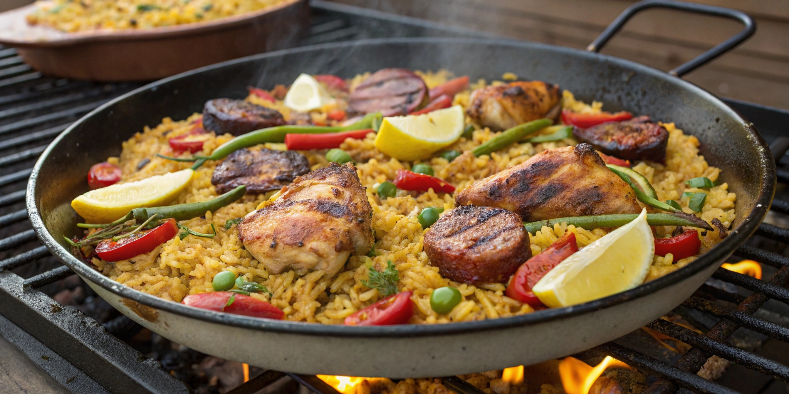

El Castell
Nach einem ganzen Tag am Hauptstrand der Gay-Szene: Abendessen in einem restaurierten Gebäude aus dem 17. Jahrhundert, mitten in der Altstadt von Sitges.

Besonderheiten
Seit 2003 als Restaurant geführt, untergebracht in einem denkmalgeschützten Bauwerk aus dem 17. Jahrhundert – mediterran-katalanische Küche mit Schwerpunkt auf Gegrilltem, Reisgerichten und Fisch. Solide, etablierte Adresse mit fester Speisekarte statt wechselnder Tageskarte.
Praktische Hinweise
Adresse: Carrer de la Carreta 21, 08870 Sitges. Hinweis: In älteren Notizen stand "Carrer de Sant Pau 12" – die offizielle Website nennt Carrer de la Carreta 21, das ist die aktuell verlässliche Adresse. Preisklasse: moderat bis gehoben, mit festen Menüs (Mittagsmenü ca. 18,50 €, Marinero-Menü ca. 28,50 €, Hummer-Menü ca. 38,50 €). Typische Gerichte: Gegrilltes, Reisgerichte, Fisch und Fleisch. Reservierung: online möglich und empfehlenswert. Entfernung: in der Altstadt, kurzer Weg von der Platja de la Bassa Rodona.